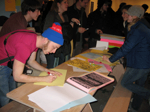
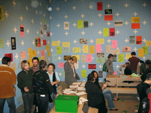
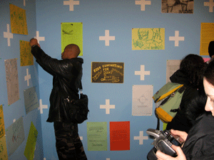
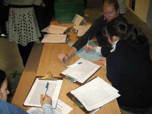

basekamp > Events
Plausible Artworlds
alt.SPACE summit (at SPACE media centre, London, June-July 2007)
Team Players for Plausible Artworlds (at ICA Philly, Jan-Mar 2007)
Strategic Planning Weekend (at Basekamp space, Sept-Oct 2006)
www.PlausibleArtworlds.org (for updated info about the project)
TEAM PLAYERS FOR PLAUSIBLE ARTWORLDS
DATES: 20 Jan Through 24-Mar-2007
LOCATION: ICA, Philadelphia
PART OF LOCALLY LOCALIZED GRAVITY
AN ICA CURATED EXHIBITION WITH: MATT BAKKOM / BASEKAMP / BLACK FLOOR GALLERY / FRITZ HAEG'S SUNDOWN SCHOOL / LTTR / LURE / RED76 / SPACE1026


TEAM PLAYERS FOR PLAUSIBLE ARTWORLDS
COLLABORATORS:
A Constructed World (Torino, Italy); Aharon Amir (Brighton, UK); BASEKAMP (Philadelphia, USA); Center for Getting Ugly (Tampa, USA); C.CRED (London, UK); Democratic Innovation (Copenhagen, Denmark); Institute for Advanced Architecture (NYC, Chicago & LA, USA); Orgacom (Amsterdam, Netherlands & Istanbul, Turkey); Pond (San Francisco, USA); Salem Collo-Julin (Chicago, USA); Trinity Session (Johannesburg, South Africa); What, How and for Whom [WHW] (Zagreb, Croatia); Stephen Wright (Paris).
WEEKLY EVENTS:
WEEK 1: ART HISTORIES & COLLECTIVITY
January 24 Wednesday. 6-8pm
The public were invited to ask about what art collectives are and how they came about through informal Q&A with writers and artists who are working collectively today.
Special Guests: Alan Moore, Ola Stahl & Kajsa Thelin (C.CRED), Aaron Levy (Slought), Scott Rigby (BASEKAMP)
WEEK 2: CONSTRUCTING SPACES
February 3 Saturday. 3-5pm
Help the Plausible Artworlds Team re-imagine/re-assemble their physical space at the ICA through presentations and discussions on experimental, communal architecture and other supportive structures in art.
Special Guests: Lars Fischer & Erik Carver (Institute for Advanced Architecture)
WEEK 3: SUPPORT, SERVICE & CIRCULATION OF WILL
February 7 Wednesday. 6-8pm
(*held at BASEKAMP space)
Invited artists will give presentations on the increasingly multifaceted role of the artist as someone who not only makes work, but also often functions as a curator and administrator.
&
February 11 Sunday. 3-5pm
ART Role-play -- Join us in "Art", a role-playing game including oversized dice, cards, and one-size-fits-all uniforms.
Meet us on the Basekamp picnic tables at the ICA. Bring only yourselves and your sense of humor.
Special Guests: This event will be led by Marisa Jahn & Erik Carver.
WEEK 4: SPEAKING RADICALLY: RE-ENACTMENTS & PRE-ENACTMENTS
February 14 Wednesday. 6-8pm
Re-enactments and radical play! Using clips from Godard and other filmmakers, participants will act out scenarios based on filmed moments in 1960s and 1970s radical history.
WEEK 5: LEARNING & COLLECTIVE RESEARCH AS AESTHETIC ACTIVITY
February 21 Wednesday. 6-8pm
The Philadelphia Survival School Reading Group. Explore how economies infiltrate and form our lives and future worlds. Invited participants will give presentations and lead discussions.
&
February 24 Saturday. 12-2pm
Kids read & draw to help interpret radical children's literature
How do kids encourage collectivity and creative action? Explore stories and poems about participating in the way the world is shaped. All welcome! Bring kids! We will provide books and drawing materials.
WEEK 6: ARCHIVES & ORGANIZATION
March 3 Saturday. 3-5pm
Game night! Develop new or different categories—different than those traditionally used by museums—to describe groupings of objects. Artists and participants will discuss preservation, obsolescence, and memory.
WEEK 7: ART & ACTIVISM: A POLITICAL PLAYING FIELD
March 10 Saturday. 3-5pm
Workshop - Using Shell Oil's Trilemma scenarios as our script, together we will run through some of these as participatory games, as a way of developing principles and strategies for determining our own futures.
Special Guests: This event will be lead by Rozalinda Borcila & Sarah Lewison of BLW & the Center for Getting Ugly.
WEEK 8: ORIGINALITY & COLLABORATION
March 14 Wednesday. 6-9pm
Game night! We will play a memory game about similarities in contemporary art to try to determine what standards or ideas might be used to evaluate collaboratively produced art.
Special Guests: Lars Fischer (Institute for Advanced Architecture, New York); Scott Rigby (Basekamp, Philadelphia); and Kent Hansen (democratic innovation, Copenhagen).
WEEK 9: REVIEW OF LLG EXHIBITION & PREVIEW OF PAW CONVENTION
March 24 Saturday. 3-5pm
The Plausible Artworlds Team hosts a party and discussion about the development of their upcoming exhibition and convention.
THANKS FOR COMING!
FOLLOW THE PROJECT ON: WWW.PLAUSIBLEARTWORLDS.ORG